| Portfolio
- ANIME
| 項目 | 回答 |
|---|---|
| 開発場所 | 大学の授業 |
| 開発期間 | 2022/12 - 2023/1 (１ヶ月) |
| 使用言語 | Processing |
| 開発規模 | 個人開発 |
| 概要 | 大学の授業でProcessingを用いてアニメーションを作成した。 |
| 目的 | テーマは、「自分を表現する」だった。 |
| 結果 | 紙芝居形式のアニメ |
| 課題 | 次回作るときには一人称や、背景が動くものに挑戦してみたい。 また、編集ソフトにも頼っているところがあったので、そこをプログラムで実装したい。 |
| 参考資料 | |
| 参考URL | Git Hub | anime |
- いい生活様 サマーインターン 2022
| 項目 | 回答 |
|---|---|
| 開発場所 | いい生活株式会社様 サマーインターン |
| 開発期間 | 2022/8/15 - 2022/8/19 |
| 使用言語 | TypeScript HTML CSS |
| 使用技術 | vue.js firebase vite Elements Plus |
| 使用ツール | git lab slack figma |
| 想定ユーザ | 田舎から出てくる大学１年生 間宮林蔵君（18歳） |
| 開発規模 | チーム開発（４名とメンター１名） |
| 概要 | |
| 目的 |
テーマ：「いい生活様のAPI とVue.jsを使ってチーム開発 をしよう！」 Vue.jsと賃貸物件データを使ってWebサービスを作る |
| 工夫 | コンポーネント化を行い保守性を高めた。また、住んでみないと分からないような情報を 在校生レビュー機能で知られるように追加したことや、review_starを使うことで視覚的にわかりやすくしたこと。 |
| 結果 | コンポーネント化を行い保守性を高めた。また、住んでみないと分からないような情報を在校生レビュー機能で知られるように追加したことや、review_starを使うことで視覚的にわかりやすくしたこと。 また、最低実装は開発期間内におえられた。しかし、UIが統一できなかった。 |
| 課題 | コンフリクトを起こして作業時間をとられた ブランチ、issueを適切な粒度で作成や、密にコミュニケーションをとり作業範囲を決める |
| システム構成 | 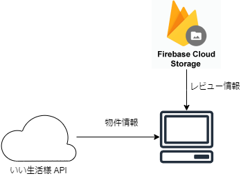 |
| 参考資料 | 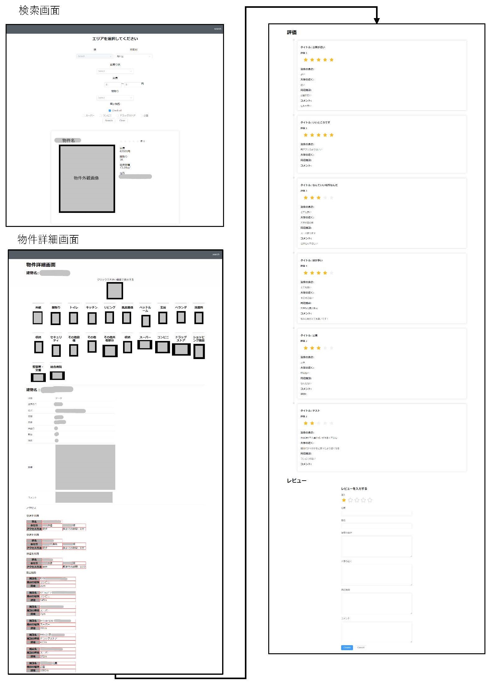 |
| 参考URL | いい生活様 サマーインターンページ |
- Sinage
| 項目 | 回答 |
|---|---|
| 開発場所 | 大学の授業 |
| 開発期間 | 2022/7 |
| 使用言語 | Processing |
| 想定ユーザ | 未来大生 |
| 開発規模 | 個人開発 |
| 概要 | |
| 目的 | 未来大でのデジタルサイネージ的なのが欲しかったため開発。 |
| 工夫 | このアプリはデジタルサイネージのようなものをイメージして自分専用に作成した。これは画面の大きさが変わってもきれいに表示されるようにした。それに加えて、APIを使って天気とニュースが表示されるようにした。いつでも最新の情報になる、かつ、リクエストによるサーバー負荷がかからないようになっている。ニュースは10分に一回、天気は１時間に１回の設定になっている。また、それぞれの画面がリアルタイムで動作するようにした。そのため、画面右下のバスは動いたり、時間によって次のバスが更新されたりするようになっている。 |
| 結果 | バスの時刻はjsonファイルを自作しているので、どうにか自動化したい。また、SVGファイルが使えなかった（授業の制約）ので、外部ライブラリをインポートして使いたい。 |
| 課題 | バスの時刻をjson形式で自動取得する。 |
| 参考資料 | 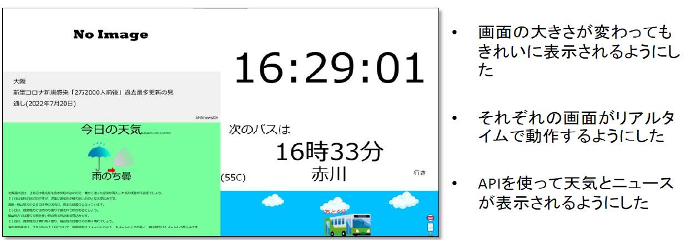 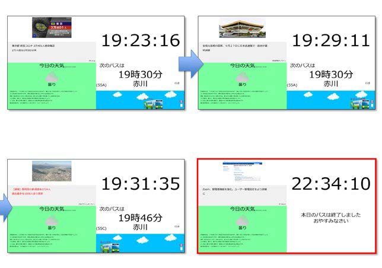 |
| 参考URL |
Git Hub | Signage
Download | Signage.zip |
- IKA QUEST
| 項目 | 回答 |
|---|---|
| 開発場所 | 大学の授業 |
| 開発期間 | 2022/6 |
| 使用言語 | Processing |
| 開発規模 | 個人開発 |
| 概要 |
函館はイカの町！ということで、イカが陸地から海に向かうというストーリー。 攻撃を避けながらアイテムを入手して制限時間以内に死なないようにする横スクロールゲーム。 操作方法：十字キー移動＋スペース等 |
| 工夫 | ボール（イカ）が自由に動けるようになりました。左右の矢印キーを押下すると、左右に移動できる。また、矢印キー上を押下するとジャンプできる。次に、HPを表示、管理できるようにした。プレイヤー（イカ）のHPは10である。プレイ画面上部に10段階でHPバーを表示する。HPは、毒キノコを食べることで-2、エビを食べることで+1となる。また、プレイ画面左側の赤い範囲に入ると1秒毎にHPが-1となる。最後に、画面遷移ができるようにした。screenNumberという変数の値によって画面遷移を行っている。そのため、draw関数が見やすくなっている。 |
| 結果 | |
| 課題 | 現在は、ランダムにブロックが生成されるようになっているが、これではゲームが詰む可能性があるので、マップを作れるようにしたい。 |
| 参考資料 | 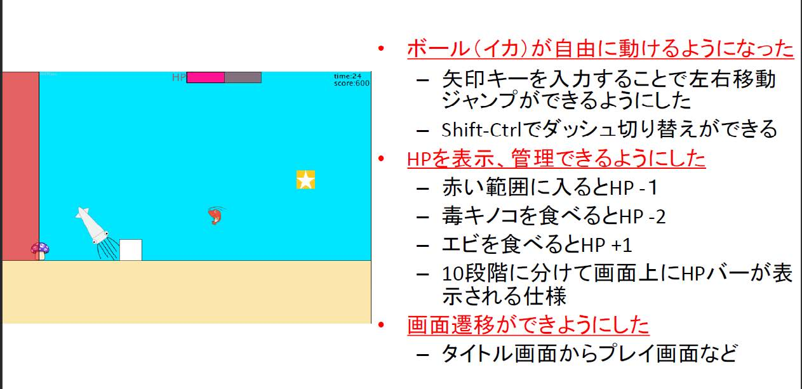 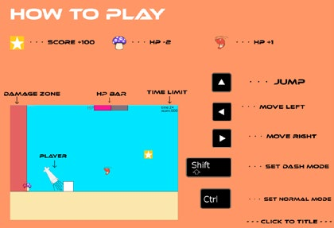 |
| 参考URL |
Git Hub | IKA QUEST
Download | ikaquest.zip |
- Wall Paper Changer
| 項目 | 回答 |
|---|---|
| 開発場所 | 個人開発 |
| 開発期間 | 2022/6 （1週間） |
| 使用言語 | Python |
| 使用技術 | Pillow Sys |
| 想定ユーザ | Windowsユーザー |
| 開発規模 | 個人 |
| 概要 | デスクトップの画像にシステム情報を記載する。 |
| 目的 | 自身のデスクトップを充実させるため |
| 結果 | 自分用にはうまくできた。 |
| 課題 | 軽量化と、OpenCVで作る。また、GUIで表示情報の選択や、パスの指定をできるようにする。 |
| 参考資料 | 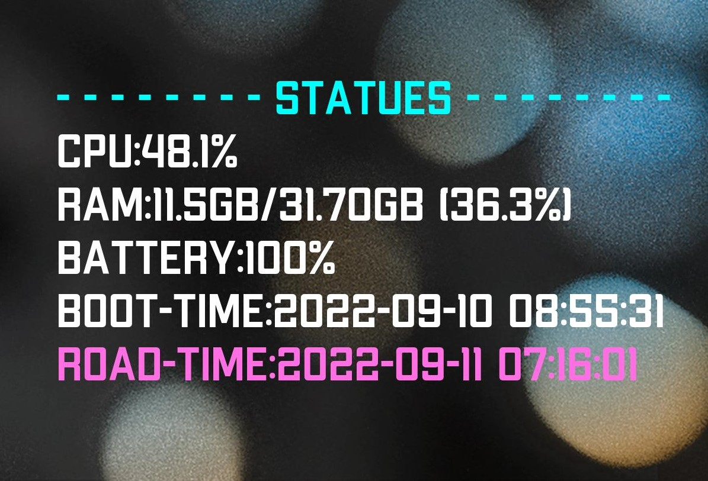 |
| 参考URL | Git Hub | Wall Paper Changer |
- Stolen Tricolor
| 項目 | 回答 |
|---|---|
| 開発場所 | いわしジャム |
| 開発期間 | 2022/3 |
| 使用言語 | Python |
| 使用技術 | pyxel |
| 開発規模 | チーム開発（４名） |
| 概要 |
ストーリー：ここは３人の魔女に色を奪われた世界。様々な世界を周り、魔女からの攻撃を避けながら星のカケラを集めて世界に色を取り戻そう！
ゲームの概要：攻撃を避けながらアイテムを入手してゴールを目指す横スクロールゲーム。 操作方法：十字キー移動 |
| 目的 | ジャムテーマ：「魔法」 |
| 結果 | 目標にしていた物は作れた。pyxelのエディターを使いこなすのに手間取った。 |
| 課題 | コーディングをほぼ一人で行ったが、煩雑な箇所が目立ったのでそこの改善をしたい。 |
| 参考資料 | 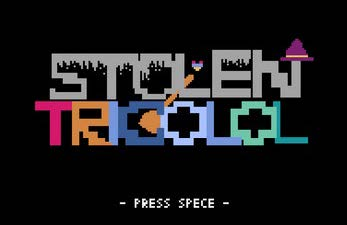 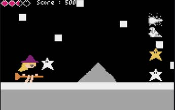 |
| 参考URL |
Git Hub | Stolen Tricolor
itcho.io | Stolen Tricolor いわしジャム |
- LINE Bot
| 項目 | 回答 |
|---|---|
| 開発場所 | 高校の研究活動 |
| 開発期間 | 2020/12～2021/4 |
| 使用言語 | Python, HTML, CSS |
| 使用技術 | LINE Messaging API, apache, |
| 使用ツール | AWS EC2, AWS lambda, AWS API Gateway, AWS S3, AWS Route53, |
| 想定ユーザ | 高校生 |
| 開発規模 | 1人 |
| 概要 | LINEのメッセージングAPIを用いて、教員と生徒のコミュニケーションを円滑にすることを目的とした。 |
| 目的 | 新型コロナウイルスにより、十分な教育を受けられない状況を改善するとともに教員の労働時間の短縮を目的とした。対象ユーザは高校生を想定。 |
| 結果 | 同時期にLINEのセキュリティ上に問題があったために、学校での運用は許可されなかった。 |
| 課題 | 画像や動画などの媒体がアップロードできないこと、教員側のUI/UXの工夫が必要であるということがあげられた。また、今回のようなシステム構成よりももっとコンパクトに作れると思うので、システム設計から考え直したいと思った。 |
| システム構成 |  |
| 参考資料 | 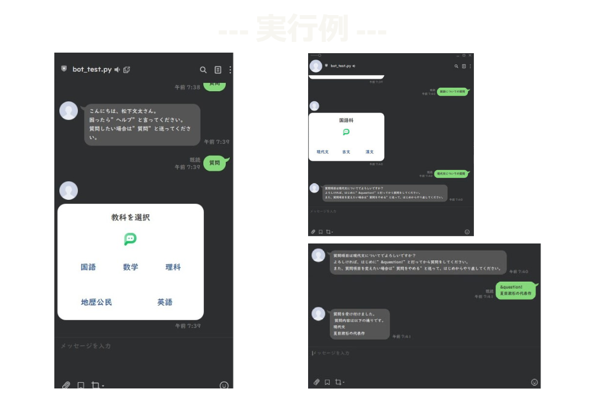 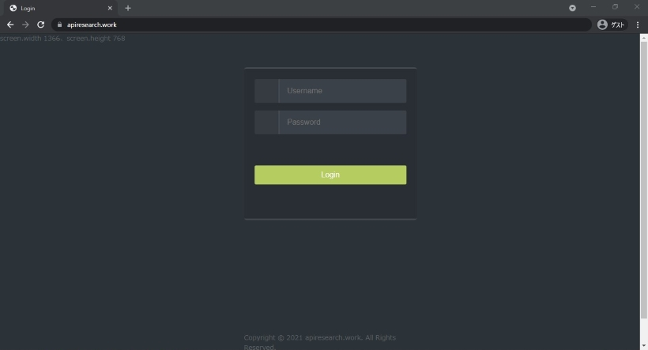 |
| 参考URL | Git Hub | LINE Bot |